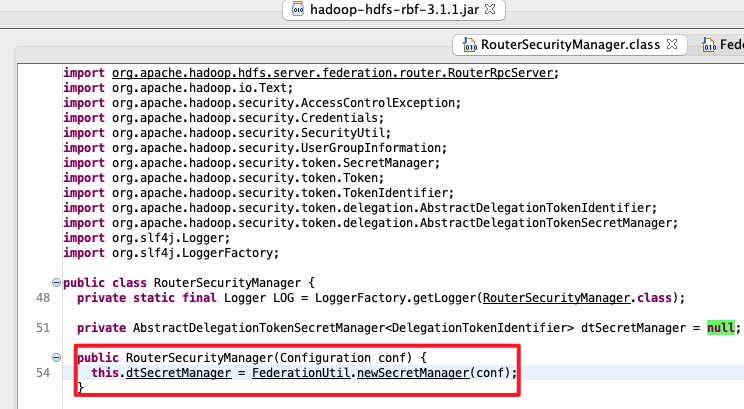
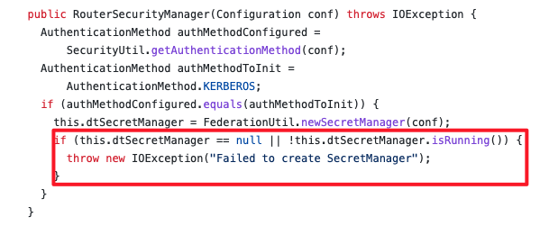

某一天 QA 报测试环境所有的 Spark 任务都鉴权失败。排查了好几天，分享下排查过程，大家就当看个故事。
环境信息：
- Spark 3.1.2, 运行采用 Spark on k8s operator
- 数据存储在华为 FusionInsight 6.5.1, 并开启了联邦
简单排查都没问题
Spark driver 看到的报错如下(省略了一些不重要的):
Caused by: java.io.IOException: Failed on local exception: java.io.IOException: org.apache.hadoop.security.AccessControlException: Client cannot authenticate via:[TOKEN, KERBEROS]; Host Details : local host is: "spark-sql-xcjgz-43aabd8581a44cae-exec-4/10.244.55.49"; destination host is: "xxx-hdp02":25019; |
由于环境之前都是正常的，大概率没有人动过环境。基于之前的经验，先排查一些常见的问题：
- 确定 Spark Operator 需要的（
k get mutatingwebhookconfiguration）存在。之前遇到过未知原因导致 webhook 消失，driver 没有 mount 上认证信息导致鉴权失败 - 确认 namespace 加了 label，可以被 webhook 监测到。之前遇到因为 namespace 没有相关 label，webhook 失效 mount 缺少认证信息，鉴权失败
- 尝试重启 Spark Operator Controller，无效。之前遇到过 controller 本身问题导致 mount 失效，可重启解决
- 确认 driver pod mount 进了 hadoop-conf, krb5.conf, keytab
说明问题应该不是由 Spark Operator 引起的。然后怀疑是不是 mount 的鉴权信息有过变动：
- 由于 driver 里没有
kinit，尝试把鉴权相关信息(core-site.xml,hdfs-site.xml,krb5.conf,keytab) 放到另一台机器上，kinit 能成功。 - 在 kinit 的基础上，尝试
hdfs mkdir和hdfs rmdir都能成功。
初步认定 Hadoop 集群没问题[1]。
接着再排除代码问题，使用 driver 镜像在另一个环境（连的另一个 CDH 集群）能正常运行。
于是环境、集群、代码看起来都没有问题，那问题在哪呢？
知识不够，Debug 来凑
最开始还是怀疑环境有问题，怀疑 spark operator 依赖环境的某些东西被修改了。但实在不知道从何查起，于是考虑远程 debug。走了一些弯路，最后是这么操作的：
- 修改提交的 spark application，加上参数
spark.driver.extraJavaOptions="-agentlib:jdwp=transport=dt_socket,server=y, suspend=y,address=5005"，这样 driver 启动后就会开启 5005 端口等待 debug - 之后通过
kubectl port-forward --address 0.0.0.0 <driver pod> 5005: 5005来开启宿主机到 pod 的流量转发 - 开启 IDEA 远程 debug，连上宿主机的 5005 端口。由于报错的是 hadoop 相关的，随便开了一个项目引入 hadoop 依赖，打断点就能用了。
断点打在 UserGroupInformation.doAs 上。发现 driver 调用时的用户信息都正常。再通过添加 spark.executor.extracJavaOptions 参数来 debug executor（记得把
executor数调成 1）。结果发现 executor 调用 doAs 时，使用的用户名是
root（预期是 work），鉴权模式是 SIMPLE（预期是 KERBEROS）。
这妥妥的是 executor pod 创建的问题呀。于是开始排查 executor，发现 executor 的环境变量 SPARK_USER=root，同时它没有mount krb5.conf 和 keytab，难道发现了
root cause?
可惜几番折腾后都不生效。最后对比运行成功的环境，发现运行成功的 exeucotr 环境变量也是一样的，也没有 mount 任何鉴权相关的信息。
无从下手，恶补知识
既然没有任何鉴权相关的信息，executor 里是怎么鉴权的？涉及到知识盲区，怎么办？
下载 Spark 3.1.1 代码，但代码太多又无从看起，于是上网搜索相关 Feature 的PR，找到下面几个信息：
- https://github.com/apache/spark/pull/21669 增加 kerberos support for k8s
- https://docs.google.com/document/d/1RBnXD9jMDjGonOdKJ2bA1lN4AAV_1RwpU_ewFuCNWKg/edit spark kerberos support 的设计文档
- https://github.com/apache/spark/pull/22911 增加了 client mode 的支持
最重要的是最后这个链接，这个 PR 的留言里有这样的信息：
In either of those cases, the driver code will handle delegation tokens: in cluster mode by creating a secret and stashing them, in client mode by using existing mechanisms to send DTs to executors.
说明鉴权都是 driver 做的，而 executor 会从 driver 拿到 delegation token。
不过 “delegation token” 又是啥玩意？大概搜到它是 Hadoop 发的 token，目标是减少鉴权压力，一般在 Map Reduce, Spark 这些有多个 worker 要访问 HDFS 的时候使用。但这些信息并没有本质帮助。
好在这样有了 debug 的头绪。一开始尝试使用 spark 的源码进行 remote debug，发现有许多问题搞不定。于是尝试直接下载 driver 里的所有 jar 包，导入到一个空 project 中，由于是 scala 直接依赖 jar 包不好单步，于是再下载对应 jar 包的 sources.jar，就可以在 IDEA 里打断点单步执行了。
同时 debug 成功和失败环境里的 executor，在对比一些步骤的变量后，终于发现问题所在：executor 在执行下面代码时，失败的环境里获取到的 token 是空。
cfg.hadoopDelegationCreds.foreach { tokens => |
考虑到 DT 是从 driver 获取的，看来是 driver 里存储的 delegation token 本来就是空的。另外回过头来发现 driver 的日志里有这么一句日志：
23/01/08 21:03:31 INFO DFSClient: Cannot get delegation token from work |
为什么 driver token 是空？继续 debug driver 发现 driver 在获取 delegation
token 时返回的是 null: FileSystem.collectDelegationTokens。最终缩小到最小的复现代码：
var conf = new org.apache.hadoop.conf.Configuration(); |
Client or Server?
是 hadoop client 有 BUG？还是 hadoop server 有问题？
查代码看到 delegation token 是 namenode 创建的。于是上集群的 namenode，用
arthas 监控 FSNamesystem.getDelegationToken 方法。
结果……执行复现代码，发现没有输出，尽管同时监控了所有的 4 个 namenode，没有任何一个有输出。然而在正常的环境里是有输出的。难道是 Client 有 BUG 没把请求发出去？
开始用 wireshark 抓包，发现还是有请求包发出的，当然因为是 RPC，内容看不出来，但 namenode 的 arthas 就是没有输出……最后在对比正常和错误环境的请求包，突然发现错误环境连接的是 25019 端口，这又是啥端口？
在集群上通过 netstat -natp 找到了进程，进程的命令显示它是集群的 router 角色。不管是 arthas 还是它的日志（如下），都发现它才是罪魁祸首：
2023-01-09 20:09:59,312 | WARN | IPC Server handler 43 on 25019 | trying to get DT with no secret manager running | RouterSecurityManager.java:124 |
其实之前在看 hadoop 相关代码时就注意到如果 server 出错应该要有这个日志，但在 namenode 日志里没有找到。现在看到这个日志，基本确定就是它的问题。最后重启 router 之后发现世界和平了。
为什么 router 会出错？
Router 生成 getDelegationToken
的逻辑如下所示，通过 arthas 发现是因为 dtSecretManager.isRunning 判断失败。再追代码发现 isRunning 失败的唯一可能就是调用了
AbstractDelegationTokenSecretManager::stopThreads，但是 stopThreads 只有停止 router的时候才会调用，与当前的现象不相符。
public Token<DelegationTokenIdentifier> getDelegationToken(Text renewer) |
可惜的是 stopThreads 的调用链路并不会输出日志。只能尝试人肉看一看从最后一次重启，到出问题之间的日志，开头结尾如下：
2022-12-29 18:54:18,187 | INFO | pool-1-thread-1 | Stopping security manager | RouterSecurityManager.java:62 |
看了不久发现，在创建 secret manager，调用 startThreads 时因为 ZK 的原因有报错：
2022-12-29 21:13:06,167 | ERROR | main | Error starting threads for zkDelegationTokens | ZKDelegationTokenSecretManagerImpl.java:48 |
但如果创建的时候就失败了，按代码逻辑，启动的时候应该失败：
public RouterSecurityManager(Configuration conf) throws IOException { |
最后发现看的代码和集群的版本不一致，FI 6.5.1 是基于 hadoop 3.1.1 版本，但是
3.1.1 版本代码里并没有 RouterSecurityManager，于是拉到集群里的 jar 包反编译，发现，FI 实现的 RouterSecurityManager 没有任何的校验：

而开源的 hadoop 在创建完后是有校验的，也找到了相关的修改commit 。 
小结
最终的问题链路是：
- FI 集群 Router 重启，启动过程需要创建 secret manager，具体的实现是基于 ZK的
- 由于某些原因在启动
ZKDelegationTokenSecretManagerImpl连接 ZK 失败，导致相关的服务启动失败 - 但是
RouterSecurityManager并没有对 secret manager 的启动状态做校验（后续版本修复），仍然继续运行 - 在实际创建 delegation token 时，由于 secret manager 的状态异常，创建的请求也失败
- Spark Driver 在获取 delegation token 时得到一个空值
- Spark Executor 需要访问 HDFS 时，会从 Driver 的 Resource Manager 中获取 profile，其中包含 driver 获取的 token，由于 token 是空的，于是鉴权失败。
另外几点感想：
- 所幸问题是发生在测试环境，要发生在客户环境，估计一万年都查不出来（当然任务肯定也会失败）。
- 另外虽然看代码很重要，但还是应该补齐相关模块的理论知识，这样事半功倍。
- 重启大法好
参考
- https://blog.cloudera.com/hadoop-delegation-tokens-explained/ Hadoop delegation token 介绍，比较偏使用而非实现原理
- https://docs.google.com/document/d/1RBnXD9jMDjGonOdKJ2bA1lN4AAV_1RwpU_ewFuCNWKg/edit spark on k8s kerberos 支持的设计文档，跟实现还是有点差距
- https://medium.com/agile-lab-engineering/spark-remote-debugging-371a1a8c44a8 spark driver/executor 远程 debug 的方法
这里犯了一个错误，就是通过 kinit 成功推断集群正常。这里因为不了解 hadoop 额外的一些机制导致的，不太好避免 ↩